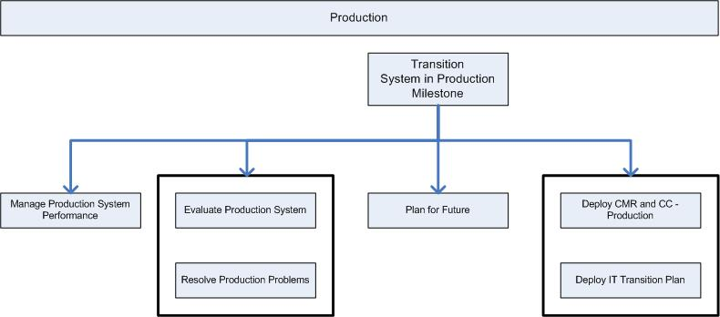

OUM |
Phase Overview |
||
Method Navigation |
Current Page Navigation |
||
|
|
||||||||
The goal of the Production phase is to operate the newly developed system and monitor and address system issues. This includes monitoring the system and acting appropriately to maintain continued operation, measuring system performance, operating and maintaining supporting systems, and responding to help requests, error reports and feature requests by users. It is also important to manage the applicable change control process so that defects and new features may be prioritized and assigned to future releases and put into a plan for future enhancements to the application system. These corrections to defects and new features will also need to be considered when determining, developing and implementing required upgrades.
The Production phase finishes with the Sign-Off Milestone. Review and be familiar with the objectives of this milestone before you begin this phase and make sure you have met these objectives before you complete this phase.
 This phase overview is written from the perspective of a Full Method View, utilizing ALL of the processes, activities and tasks in this phase. Therefore, all of the following sections provide comprehensive information. If your project is utilizing a tailored approach (for example, Technology Full Lifecycle View, Application Implementation View, Middleware Architecture View), not everything in this overview may be appropriate for your project. Please keep this in mind, especially when reviewing the Prerequisites, Processes, Key Work Products, Tasks and Work Products and Task Dependencies sections. You should use OUM as a guideline for performing all types of information technology projects, but keep in mind that every project is different and that you need to adjust project activities according to each situation. Do not hesitate to add, remove, or rearrange tasks, but be sure to reflect these changes in your estimates and risk management planning. You should also consider the depth to which you address and complete each task based on the characteristics of your particular project or project increment. See Oracle's Full Lifecycle Method for Deploying Oracle-Based Business Solutions for further information on the scalability and adaptability of OUM.
This phase overview is written from the perspective of a Full Method View, utilizing ALL of the processes, activities and tasks in this phase. Therefore, all of the following sections provide comprehensive information. If your project is utilizing a tailored approach (for example, Technology Full Lifecycle View, Application Implementation View, Middleware Architecture View), not everything in this overview may be appropriate for your project. Please keep this in mind, especially when reviewing the Prerequisites, Processes, Key Work Products, Tasks and Work Products and Task Dependencies sections. You should use OUM as a guideline for performing all types of information technology projects, but keep in mind that every project is different and that you need to adjust project activities according to each situation. Do not hesitate to add, remove, or rearrange tasks, but be sure to reflect these changes in your estimates and risk management planning. You should also consider the depth to which you address and complete each task based on the characteristics of your particular project or project increment. See Oracle's Full Lifecycle Method for Deploying Oracle-Based Business Solutions for further information on the scalability and adaptability of OUM.
The following is a list of the objectives of this phase:
The Production Phase / Sign Off (SO) Milestone Checklist is available to assist with determination of completeness for this phase.
The following processes are active in this phase:
Refer to Key Work Products for a complete list of key work products in OUM.
This section discusses the primary techniques that may be helpful in conducting the Production phase. It also includes advice and commentary on each process.
Production Performance Management is the extension of Performance Management techniques and approaches identified and implemented prior to production implementation. Performance metrics should be regularly collected and reviewed for all components. Although the basic strategy may be in place, variations in both requirements and performance are likely to be encountered. Particular scrutiny of performance metrics should occur any time a change is introduced to the system such as a patch, new interface or module, a change in hardware, etc.) Proactive evaluation of variations to the baseline will help to identify potential performance issues before the user community notices the impact.
Ongoing throughout the project, change and communication events targeted to specific audiences with the goal of mitigating identified risks and challenges are conducted. In addition, during Production, you conduct an effectiveness assessment to capture the efficiency of the work done during the project and highlights the change management work to continue after the Go Live to enable a shorter transition, as well as the IT Transition Plan prepared during Transition is implemented.
The contracts for most software development and implementation projects specify a required warranty period. This is the length of time following system acceptance that the project team is obligated to address problems and fix any faults that are found. A typical warranty period is ninety days. The specified warranty period usually determines the character of the Operations and Support process. A short or absent warranty period means a very short time to hand over the crucial jobs of application support and maintenance. A longer warranty period allows a more gradual hand-off.
Strict change-control procedures are critical to the success of the Operations and Support process. Procedures for logging faults and performance exceptions must be explicit and well understood. The project manager and customer project manager must have a very good operational understanding of the definitions of a system defect, a performance exception, and an application enhancement. Any misunderstanding can easily contribute to scope expansion.
Some customers require a configuration audit of the system. This audit usually includes validation of the system against supplemental requirements. Increasingly, such audits focus on security issues, such as the prevention of unauthorized access to data. Therefore, it is important to address such issues and to involve the internal auditors in the Technical Architecture process. Audits should be repeated as the system is updated.
Many of the tasks in the Operations and Support process involve evaluating the system's performance in relation to the performance requirements documented in the Technical Architecture process. If the project team has not built hooks into the application to capture exact response times and transaction frequencies, these tasks require gathering subjective feedback from the users.
Also during this process, the Future MoSCoW List is developed. This list defines enhancements to be made during and after the Production phase. Unlike typical IS systems, OUM custom developed applications may require frequent releases to keep pace with competitors, refine the business model, and add capability. The uncompleted Should have, Could have, and even Won't have requirements may be reprioritized and included in the Future MoSCoW List.
If you are using a Scrum approach, use the Managing an OUM Project using Scrum technique. You can also go directly to the Production phase Scrum guidance within this technique.
This phase includes the following tasks:
| ID | Task | Work Product |
|---|---|---|
Business Requirements |
||
RD.160 |
Convert Project Views to Reusable Viewpoints | New Reusable Viewpoints |
Performance Management |
||
PT.120 |
Conduct Production Performance Management | Managed Production Environment |
Organizational Change Management |
||
OCM.150.5 |
Conduct Change Management Roadmap and Communication Campaign | Change Management Roadmap and Communication Events |
OCM.155.4 |
Monitor Change Management Roadmap and Communication Campaign Effectiveness | Change Management Roadmap and Communication Campaign Effectiveness Assessment |
OCM.250 |
Measure Organizational Change Effectiveness | Organizational Effectiveness Assessment |
OCM.260 |
Implement IT Transition Plan | Aligned IT Organization |
Operations and Support |
||
PS.010 |
Manage Transition to Steady-State Operations | Steady-State Operations |
PS.010 |
Audit System | System Evaluation |
PS.050 |
Analyze Problems | Fault Corrections |
PS.060 |
Monitor and Respond To System Problems | Problem Log |
PS.065 |
Post Go-Live Support | Post Go-Live Support |
PS.135 |
Determine Future Functional Enhancements | Future Functional Enhancements |
PS.140 |
Plan Enhancements | Future MoSCoW List |

The most likely areas of risk in the Production phase are the following:
These factors have been shown to be critical to the success of this phase:

Copyright © 2006, 2016, Oracle and/or its affiliates. All rights reserved.